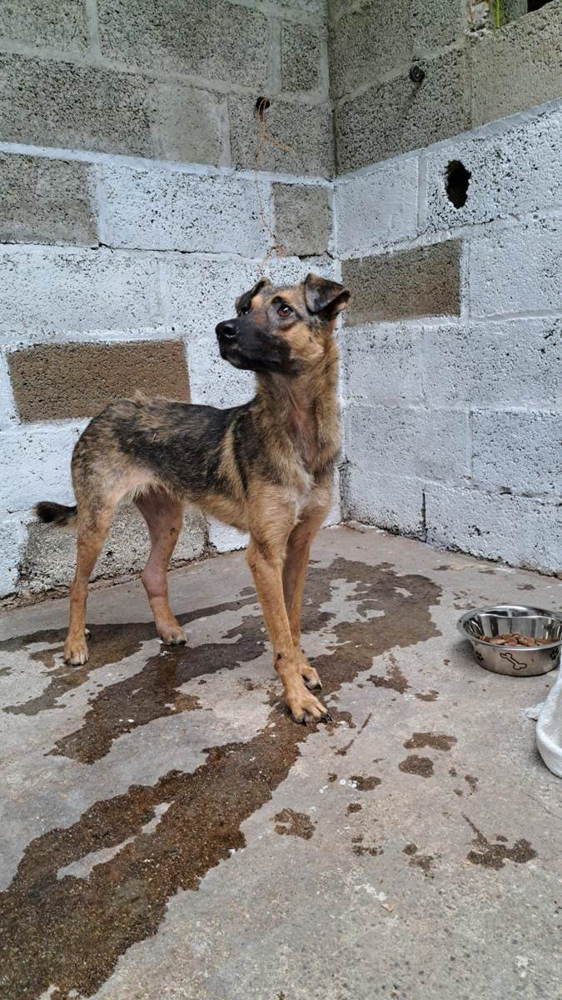
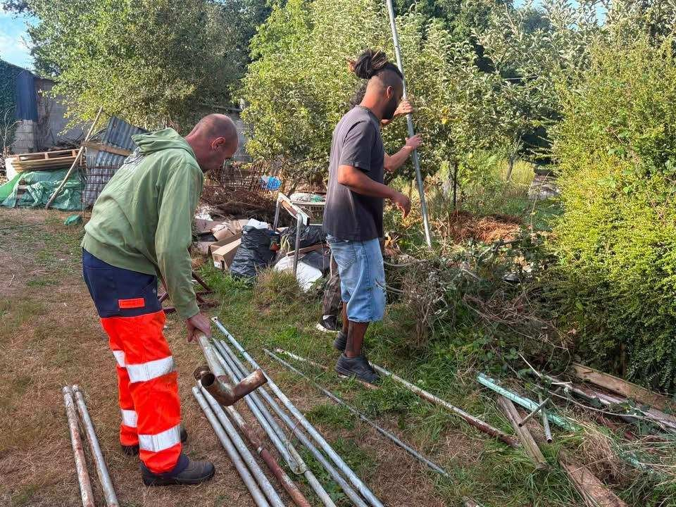
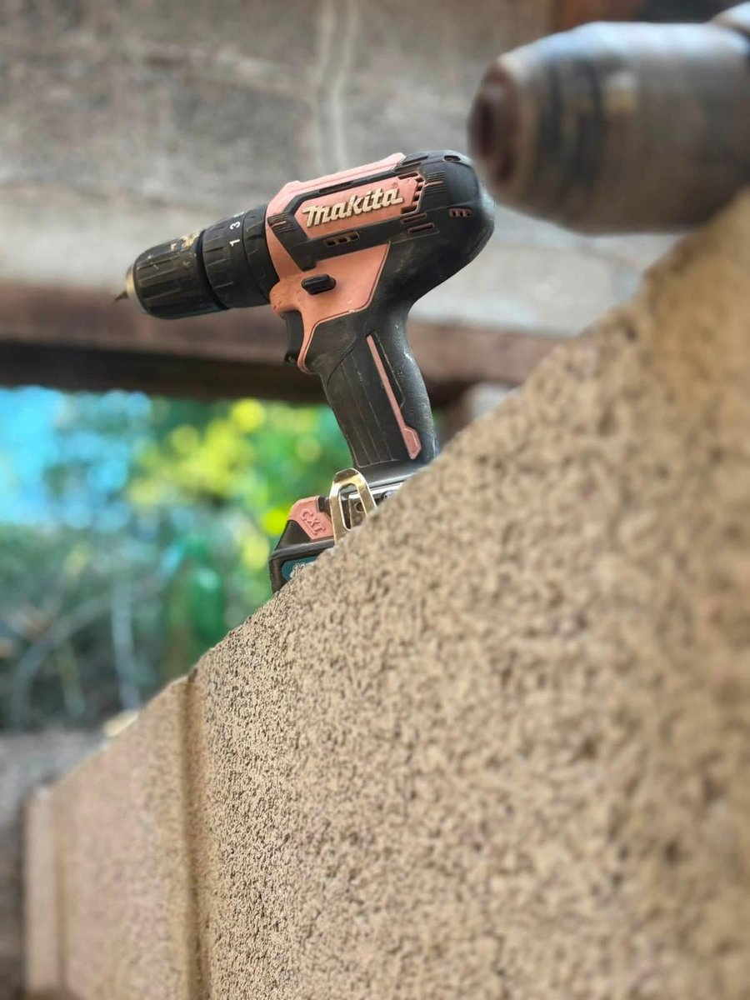
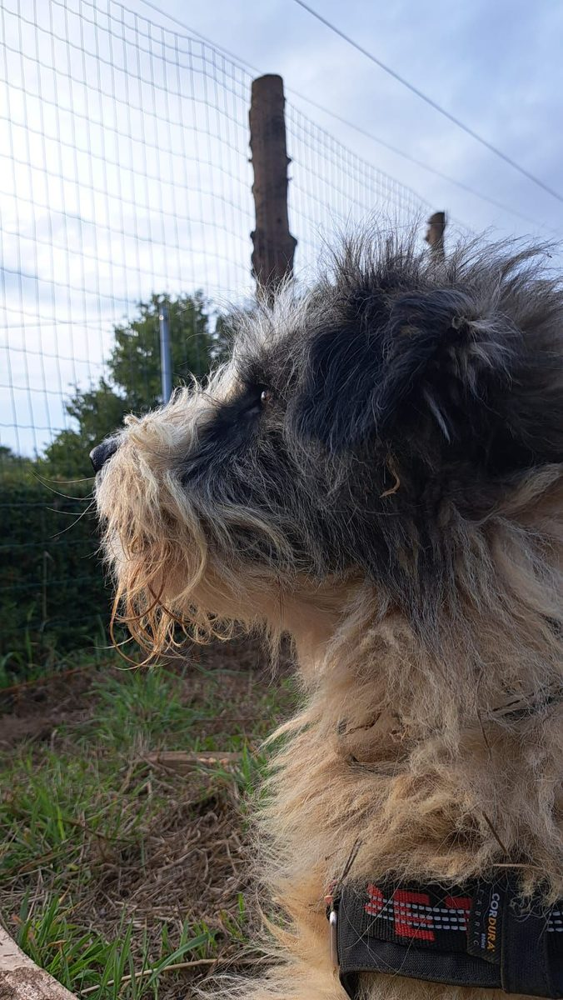
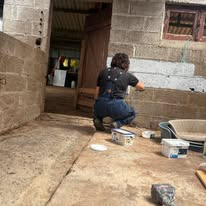
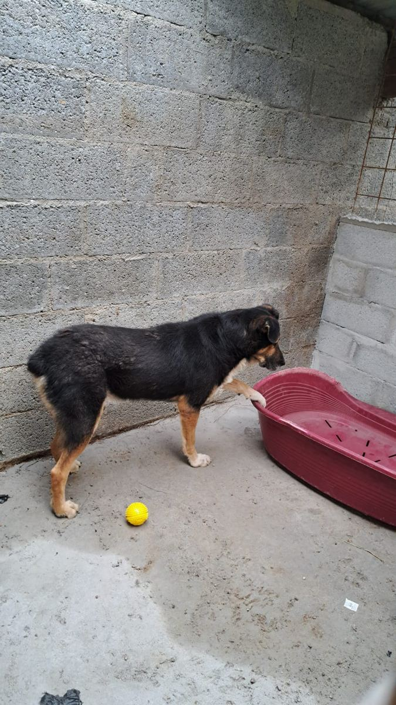
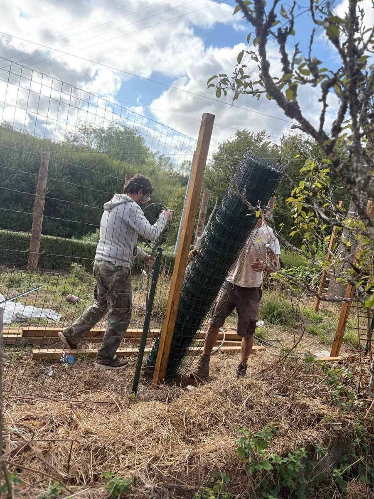
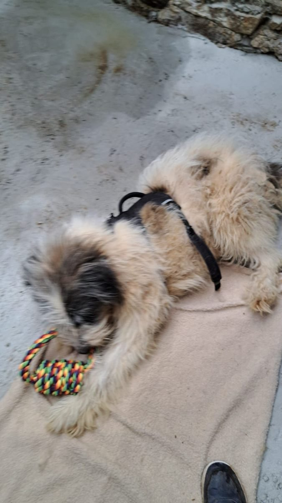

Association de protection animale en Bretagne « Si j'attends d'être prête, certains d'entre eux ne seront plus là »
La fondatrice de Dogcytocin et Racines
Ce que nous construisons
Un endroit pensé autrement, pour les chiens comme pour les humains qui gravitent autour d'eux.

Sauver et soigner
Des chiens abandonnés, oubliés ou condamnés ailleurs, à qui nous offrons du temps, de l'espace et une vraie seconde chance.
En savoir plus
Accueillir des humains
Des bénévoles isolés ou en situation de handicap trouvent ici un endroit où se rendre utiles, entourés d'animaux et de nature.
En savoir plus
Faire pousser le projet
Dons, matériel, temps ou compétences : chaque petit geste nous aide à construire quelque chose de beaucoup plus grand.
En savoir plus1,5 ha
de nature préservée à Plougonver, dans les Côtes-d'Armor
2 missions
sauver et soigner des chiens, accueillir des bénévoles
Roumanie
des chiens venus de la fourrière de Târgu Jiu, accueillis en Bretagne

Notre histoire
Nous savons très bien que nous ne sauverons pas tous les chiens.
Nous ne réparerons pas toutes les injustices.
Nous ne changerons pas le monde entier.
Mais si nous pouvons changer entièrement le monde de ceux qui passeront par ici… alors ça vaut la peine d'essayer.
Lire notre histoire complèteEn ce moment sur le terrain
Le projet avance chantier après chantier, venez voir où ça en est.




Nous trouver
1 Tachen Rignou, 22810 Plougonver
En pleine campagne des Côtes-d'Armor, entre Callac et Guingamp, le lieu où tout ce que vous voyez sur cette page prend racine.
Envie d'en faire partie ?
Rencontrez les chiens qui attendent leur famille, ou découvrez comment nous soutenir, chaque geste compte.
Une question ? Écrivez-nous